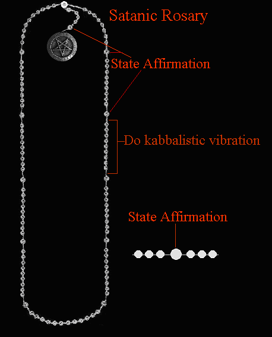

| The Satanic Rosary is an excellent and very effective means to
raise power and apply energy towards your desires. The Satanic Rosary can
also be used as a kabalistic meditation tool for working with vibrations,
such as with Runic
meditation. Just slide your fingers over the beads and you don't have
to count. Your meditation can flow smoothly and thus have more power.
The Catholic Rosary was STOLEN from Tibetan Mala Beads and corrupted, as with everything else in that foul program. Tibetan Mala beads have 108 beads, as opposed to the stolen Catholic Rosary, which has half that number, at 54. |  |
For working the rosary, each working should begin on a favorable planetary period in regards to the goal. The standard for this and this is very effective is 40 days straight. For maximum power, twice a day, during the day and at night for the 40 days. The "40 days" was stolen and corrupted into that filthy judeo/xian bible, but originated in Ancient Egypt. This has to do with numbers (Enki/Satan's number is 40) and the moon cycle. The most powerful times to do a working ar at midnight, 12 noon, 6 pm and 6 am, BUT make sure the hour is supportive of the working, first and foremost as you are able to.
Research has proven that the Ancient Chaldean planetary hours are extremely
accurate. I strongly encourage you to download the Chronos program from this
website:
CLICK HERE
You will need to download and install version 2.0 of the Microsoft .NET Framework along with this. All of the information is available at the above website. This program is outstanding and calculates hours of the planets specific to your location. Given the results of your workig, if you still have not obtained your goal after completing the 40 days, you can begin another 40 days. Skipping a day will set you back at day one. No days can be skipped. There is this thing called "karma" as most of you know. This shit is ruled by the planet Saturn and the only way to defeat it is to know it and work to overcome it. Karma will give you a beat down and keep you beat down unless you are aware of it and are strong and persistent enough to fight against it and overcome it. This is not for the weak. Persistance, patience and hard work are required here. When past life karma kicks in, things will come up like a crisis in your life to try to break the 40 day cycle and to stop you from your meditations. What this indicates is that your meditations are working. Keep doing your daily meditation with the rosary regardless of what happens. These sorts of things usually crop up during the last 30-40 days of the meditation cycle, to try to set you at square one again and/or stop the meditation. Be prepared and aware. One must keep fighting. Only the strong survive here and attain their goals.
Energy must be applied over and over again until change is achieved. This is analagous to a chiropractor who keeps popping the spine into place until it stays where it should be.
For healing, it is important when there are chronic ailments to go way beyond the end of the symptoms, in meditating. The symptoms may stop for a time and then return if meditation is stopped. The length of time one has endured the ailment means longer times for meditations, sometimes even for months or years. Congential problems are the worst and the most difficult to heal. these are by no means impossible. They just will require much more power and effort.
By using the Satanic Rosary, we are taking back what is ours for one, and another- blaspheming the Catholic Church. I have found this meditation tool to be excellent and that is an understatement. The vibrations flow into a rhythm and power is amplified and can be applied towards any desire.
To use the Satanic Rosary, ideally, you should be working with the Kabalah. The TRUE Kabalah is using vibration, for example vibrating Runes, names of Demons, Egyptian words of power, etc., to drastrically raise your energy and power. This form of meditation is advanced and is extremely effective.
You can just do the vibrations for raising energy and awareness, or you can focus on a specific chakra or aspect of your soul, or you can do spell-working.
I suggest you make your own Satanic Rosary. They are easy to make. The materials are cheaply available in most stores where they have an arts and crafts section. Just purchase the beads and the cord. The Baphomet can be purchased online or at any well-stocked occult shop. I suggest leaving a bit of space on the cord, so you can slide the beads along as you do your vibration for each one. I also suggest you place an extra bead (I used square shaped beads for the extra beads) on each side of the larger one when you hit 50. That way you can feel where you are at without interrupting your trance/meditation.
To use the Satanic Rosary, here is an example- feel free to modify your own meditation to fit your individual purposes:
FOR ATTRACTING MONEY:
1. Begin with the larger bead right next to the Baphomet and state your affirmation in your mind; example: "I am attracting large amounts of free and easy money. This money is free and all mine to keep or spend as I please." Now, direct the energy, visualizing a white/gold light (this is all-purpose) on your wallet and yourself.
2. Repeat the above for the four remaining beads.
3. Your Satanic Rosary should have 108 beads, so one side of the main line
should end with eight. You want to start with the side that has nine. Breathe in
and on the exhale, vibrate:
F-F-F-F-F-F-F-E-E-E-E-E-E-E-E-H-H-H-H-H-H-H-U-U-U-U-U-U-U
4. Slide the bead back and go to the next one, breathe in and on the exhale,
vibrate
F-F-F-F-F-F-F-E-E-E-E-E-E-E-E-H-H-H-H-H-H-H-U-U-U-U-U-U-U
5. Do this for each bead in the sets of nine. Visualize the Fehu Rune glowing with energy, every so often as you do the vibrations. (If you are vibrating the name of a Demon, then visualize His/Her Sigil in the same way.
6. When you reach the larger 10th bead, separating the sets of the smaller 9 beads, state your affirmation again and put your energy you have just raised into attracing money, as given in the example above. You can also use each 10th bead to take a few normal breaths before returning to the vibrations again.
FOR LOVE/LUST:
To bring a desired one into your life, visualize the
energy you raise engulfing him/her. You can also fantasize having sexual
intercourse or whatever with the one of your desire. I suggest you visualize the
light (energy) engulfing both of you, during the meditation/fantasy. When you
are finished, you can masturbate and direct more energy from the orgasm into
him/her.
TO HEAL:
State the affirmation for healing and then direct the energy
both by feel and visualization into the afflicted part of your body. If healing
a loved one, do the visualization and don't forget to clean the afflicted part
before beginning the meditation.
Remember, with healing, energy must be
directed along with affirmations to the afflicted part some 10-20 times a day.
This can take anywhere from 1-2 minutes, but must be done as much as possible,
any time you can focus, until you are completely healed.
Click Here
for more information about healing.
FOR BLACK MAGICK:
Use the rosary the same way, to pump negative energy
into your target.
IMPORTANT!
For black magick workings, it is very important to use a
separate rosary. The rosary accumulates energy and can become more and more
powerful each time you use it. Obviously, contrary energies here can clash and
cancel each other out.
I have used the Satanic Rosary for both attaining my desires, and for
just raising my energies. Working with runes is extremely powerful and during
the meditation, it is not unusual to see certain aspects of your soul and feel
the energy aligning itself.
� Copyright 2007, Joy of Satan Ministries;
Library of Congress Number:
12-16457
BACK TO SATANIC POWER MEDITATION MAIN PAGE